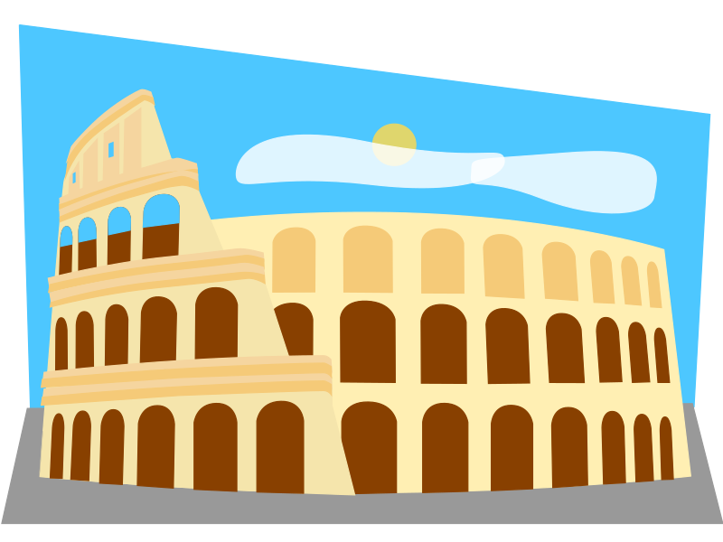

Live DevLog
| 23 Jun 2018 |
| 15:40:13 | DONE |  Wendicka/Wendicka#13 Wendicka/Wendicka#13 |
| 15:39:26 | DONE | Wendicka/Wendicka#12 |
| 22 Jun 2018 |
| 19:58:43 | BACKUP |  Running ;) Running ;) |
| 19:58:18 | STATUS |  Still a lot to do, but hey I made progress :P Still a lot to do, but hey I made progress :P |
| 18:53:05 | WENDICKA |  At the present time I've indeed some more time to be done here than with the game... Now Wendicka and the Scyndi projects will very likely not be very big or long projects, meaning that I can continue the game soon.... ;) At the present time I've indeed some more time to be done here than with the game... Now Wendicka and the Scyndi projects will very likely not be very big or long projects, meaning that I can continue the game soon.... ;) |
| 18:51:37 | WENDICKA | More stuff done |
| 21 Jun 2018 |
| 16:24:32 | FIXED |  Label fixes Label fixes |
| 16:24:26 | WENDICKA | More stuff done |
| 12:10:15 | BUG |  wendicka/wendickka#4 wendicka/wendickka#4 |
| 12:09:57 | WENDICKA | More crap done |
| 10:45:33 | WENDICKA | Go parse errors gone, but does that mean it works? |
| 10:39:18 | WENDICKA | Countless fixes |
| 10:13:52 | TODO |  wendicka/wendicka#3 wendicka/wendicka#3 |
| 08:31:47 | DEBUG |  Debug Chat in Wendicka Debug Chat in Wendicka |
| 20 Jun 2018 |
| 23:26:47 | WENDICKA | More work here |
| 17:09:18 | WENDICKA | Chunk preparation |
| 12:57:00 | WENDICKA | Pararead |
| 12:29:49 | WENDICKA | Var call adepted |
| 12:26:29 | WENDICKA | Improved parameter workout |
| 19 Jun 2018 |
| 11:26:54 | WENDICKA | I'vecome to the conclusion a different approach for calling chunks and apis is actually in order for Wendicka. The current method just sucks... |
| 18 Jun 2018 |
| 23:01:23 | STATUS | I've been thinking of how to handle the Gauntlet tool for Nino best, and I think I got an idea... |
| 23:00:47 | WENDICKA | At least no parse errors here |
| 22:57:03 | WENDICKA | MOV support |
| 22:42:59 | WENDICKA | More skeleton code |
| 11:19:12 | WENDICKA | Improved read-out |
| 17 Jun 2018 |
| 10:39:47 | JUDGMENT |  That will have to do That will have to do |
| 10:28:17 | TEST |  And test ... again! And test ... again! |
| 10:28:06 | CONFIG |  Let's up the "slowness" factor Let's up the "slowness" factor |
| 10:27:49 | JUDGMENT | Still too fast |
| 10:25:15 | TEST | Another fishing test! |
| 10:25:02 | GITHUB |  Issue tracker label reconfiguration. Issue tracker label reconfiguration. |
| 10:23:38 | BUG | #133 |
| 10:22:04 | CONFIG | I've raised the minimum cycle time in the "Player vs. Fish" routine.... hopefully that will make it more doable... |
| 10:18:16 | BUG | #132 |
| 10:16:41 | ANALYSIS |   I found out why in the forest it goes so much easier. The complexity of the forest causes the meter to go slower. I'll adept the minimal timer, as people with really fast computers will undoubtedly suffer here. I found out why in the forest it goes so much easier. The complexity of the forest causes the meter to go slower. I'll adept the minimal timer, as people with really fast computers will undoubtedly suffer here. |
| 10:07:25 | WENDICKA | Parse error cleanup |
| 16 Jun 2018 |
| 23:40:12 | STATUS | calling it a day! |
| 23:39:22 | ALPHA |  Updated Updated |
| 23:38:49 | NOTE |  I'm not entirely happy about the player vs. fish gauge.... So it may be re-adjusted soon, although I do want to re-check things in Beaufort forest first before doing anything drastic. I'm not entirely happy about the player vs. fish gauge.... So it may be re-adjusted soon, although I do want to re-check things in Beaufort forest first before doing anything drastic. |
| 23:37:49 | BACKUP | Running |
| 23:37:42 | CLOSED |  #80 #80 |
| 23:35:18 | CONFIRMED |  YAY! YAY! |
| 23:28:55 | COSMETIC |  Wood texture properly wrapped Wood texture properly wrapped |
| 23:26:21 | CONFIRMED | That works the way it should |
| 23:21:11 | LINK |  Field linkback Field linkback |
| 23:19:11 | CLOSED | #68 -- I'll re-open that if it still appears to be broken :-/ |
| 23:18:35 | FAILURE |  Devlog tool crash Devlog tool crash |
| 23:08:26 | FIXED | Another case error fixed.... SIIIIIIGH! |
| 23:08:13 | COCKROACH |  I HATE CASE SENSITIVE PROGRAMMING LANGUAGES!!!! I HATE CASE SENSITIVE PROGRAMMING LANGUAGES!!!! |
| 22:57:30 | NOTE | I *HATE* case sensitive languages.... :-/ |
| 22:57:16 | FIXED | Another case error |
| 22:50:34 | CONFIRMED | It looks like #68 is fixed indeed, but I want another test to TRUELY confirm it |
| 22:45:05 | STATUS | I has to work some time, eh? |
| 22:44:32 | TEST | Let's try that again, shall we.... |
| 22:44:23 | STUPIDITY |  CASE ERROR! CASE ERROR! |
| 22:42:30 | COCKROACH | Apparently, I did not.... :-/ |
| 22:40:33 | FIXED | I did an attempt to fix #68 |
| 22:19:34 | FIXED | Reference case error |
| 22:13:42 | FIXED | Error catcher wrongly positioned |
| 22:08:40 | TEST | And let's test it once more.... :-/ |
| 22:08:19 | FIXED | No "return" command at the end of the module.... doh! |
| 22:07:58 | SOLVED |  Oh wait, it was not ignored Oh wait, it was not ignored |
| 21:57:51 | FIXED | And blocked two fields that should not be linked in |
| 21:57:34 | FIXED | That was a code typo |
| 21:51:28 | BUG | Apparently, the link is not fully established as a "nil" error still pops up :-/ |
| 21:44:29 | FIXED | Fixed that! |
| 21:44:23 | SOLVED | Ah, so THAT is why |
| 21:43:47 | BUG | That didn't work as planned |
| 21:31:59 | TEST | At least I can test what I got now. ;) |
| 21:31:49 | NOTE | There is no "exit" on this flow yet, though... One thing at the time |
| 21:31:34 | LINK | And those two actions should link the sign to the content on it in the process... |
| 21:31:14 | SCRIPT |  And a mapscript initiator has been written And a mapscript initiator has been written |
| 21:31:03 | SCRIPT | I've set up the map loader to automatically add some functions to the map script |
| 20:55:40 | TODO | #131 |
| 20:41:14 | NOTE | Read: It needs to be linked and tested |
| 20:40:56 | SCRIPT | I've worked out the script for the fishing signs, however, this is not yet completely worked out. |
| 17:25:38 | GITHUB | More pushing |
| 17:17:51 | RYANNA |  project update project update |
| 17:15:51 | ART |  Wood texture for background Wood texture for background |
| 17:04:26 | GO |  But I guess I found a way to CHEAT..... Naughty naughty, but hey, I am not the one who went into total stupidity for not implementing a normal "while" clause into Go... :P But I guess I found a way to CHEAT..... Naughty naughty, but hey, I am not the one who went into total stupidity for not implementing a normal "while" clause into Go... :P |
| 17:02:46 | FAILURE | I guess the GO language fell on its own sword for only supporting "for" as their loop command.... :-/ |
| 17:00:49 | FIXED | And now I understand why I only caught junk in the forest.... XD |
| 17:00:33 | FISHING |  And I added the piranha and the trout to the forest spot And I added the piranha and the trout to the forest spot |
| 17:00:19 | FISHING | Neon Tetra can also be caught in the cave now |
| 17:00:04 | FISH |  Trout Trout |
| 16:53:52 | FISH | Neon Tetra |
| 15:52:26 | FIXED | AI settings Mage Blob |
| 15:32:07 | NOTE | No issues closed as the last fixes were not issued on the issue tracker. None of them. |
| 15:31:47 | GITHUB | pushed |
| 15:27:54 | FIXED | The extreme outcomes in experience rates |
| 15:08:27 | FONT |   + + |
| 14:55:55 | FIXED | Case error |
| 14:52:27 | NOTE | (In fact, I even forgot I actually opened it in the first place) :P |
| 14:52:11 | CLOSED | #70 (I completely forgot that issue was still open, while it had to be closed ages ago). |
| 14:51:43 | TODO | #130 |
| 14:49:54 | STATUS | Once that works I'll investigate what I can do to get #80 to work. |
| 14:49:40 | FISHING | I'm first gonna test the fishing spot here |
| 14:48:57 | WENDICKA | Some API business |
| 10:44:11 | STATUS | If everything works, I may put some work into #80 |
| 10:09:34 | FISHING | Starrow fishing spot placed |
| 10:05:25 | UPDATED |  #124 #124 |
| 10:04:28 | CAMEO |  Eric Eric |
| 09:55:58 | MAP |  Cameo put in map Cameo put in map |
| 09:54:16 | SCENARIO |  For Cameo For Cameo |
| 09:54:09 | ART | Cameo Art dug up |
| 09:35:13 | FISH | Cave Crab |
| 09:35:04 | FISH | Rubber Duck |
| 15 Jun 2018 |
| 19:59:14 | TEST | Time to run a little test |
| 19:58:43 | TUTORIAL |  Leadership Leadership |
| 19:58:34 | TUTORIAL | Gauntlets |
| 19:58:27 | SCENARIO | Gauntlets |
| 19:50:20 | MAP | Area 002 complete in main development |
| 17:56:14 | MAP | A bit more of area 002 |
| 17:16:07 | LINK | Those linksups have now been done |
| 17:11:19 | ANNA |  All achievemnts added to Anna, but not yet linked All achievemnts added to Anna, but not yet linked |
| 16:58:16 | GAMEJOLT |  All achievement added to Game Jolt, but not yet linked All achievement added to Game Jolt, but not yet linked |
| 16:58:01 | ACHIEVEMENT |  Old Sparkey! Old Sparkey! |
| 16:57:00 | ACHIEVEMENT | I'm the invisible man! Incredible how you can see right through me! |
| 16:56:39 | ACHIEVEMENT | I came from Alabama with a banjo on my knee |
| 16:56:18 | ACHIEVEMENT | Life forms! You pretty little life forms! You tiny little life forms! Where are you? |
| 16:55:46 | ACHIEVEMENT | The cold never bothered me anyway |
| 16:55:38 | ACHIEVEMENT | Gorillas in the mist |
| 16:55:26 | ACHIEVEMENT | Nino will make you JUMP! JUMP! |
| 16:54:39 | ACHIEVEMENT | He was such a crook! Captain Hook! |
| 15:58:32 | ACHIEVEMENT | Fire, water, burn! |
| 15:54:53 | ACHIEVEMENT | I got myself a crying, walking, sleeping, talking, living doll |
| 15:47:26 | ALPHA | Note! If you already have the rod, you cannot get this achievement anymore unless you start a new game. Sorry about that! |
| 15:47:01 | LINK | Linked achievement to their respective script events |
| 15:41:43 | CONFIG | Backup |
| 14:47:20 | BACKUP | Extra backup |
| 14:47:06 | NOTE | They are not linked to the networks yet |
| 14:46:52 | ACHIEVEMENT | If the glove doesn't fit, you must acquit |
| 14:46:02 | ACHIEVEMENT | The middle of the film |
| 14:28:53 | GITHUB | Pushed stuff |
| 14:27:53 | RYANNA | Extra config |
| 14:26:50 | ART | Gauntlet for in the map |
| 14:24:07 | GAMEJOLT | FINALLY |
| 12:20:23 | GAMEJOLT | Today's reported stuff is crazy (read: more than usual), so I got some work here... |
| 12:19:17 | WENDICKA | VM skeleton |
| 00:32:32 | STATUS | That's it... Calling it a day... see ya! |
| 00:19:11 | SCREENSHOT |   |
| 14 Jun 2018 |
| 20:47:59 | ALPHA | Updated |
| 20:47:53 | BACKUP | Running |
| 20:47:07 | STATUS | I need to take a break now. Focus points to work on in the game are now: Getting Ryanna's transformations to fully work, and Nino's Gauntlet tool. |
| 19:48:58 | CONFIRMED | Nino in combat works... at least, he's there, and he can attack... I haven't yet tried items and spellcasting, but I don't expect too much issues there, and if they are there, they'll very likely be fixed in a jiffy. |
| 19:48:21 | SCREENSHOT |  |
| 19:31:28 | FIXED | Ah, incorrect filename |
| 19:29:51 | BUG | Nino's combat card not found? |
| 19:27:07 | TODO | #129 |
| 19:26:36 | GITHUB | Crap pushed |
| 18:55:55 | STATUS | I didn't yet have the time to see how Nino will hold himself in combat, so I'm gonna try now... |
| 17:39:30 | ART | Nino casting pose |
| 17:32:47 | ART | Nino Fighting Pose |
| 17:25:13 | CHARACTER |  I changed Nino's weapon name, to make it more fitting to some kind of parody he actually is. I changed Nino's weapon name, to make it more fitting to some kind of parody he actually is. |
| 15:02:20 | STATUS | And now everything is the way it has to be... for now... |
| 14:56:28 | UPDATED | Credits |
| 14:56:20 | FIXED | Filename typo |
| 14:56:15 | FIXED | And that takes care of another possibility to crash |
| 14:48:40 | LINK | I forgot to link the arena to the map |
| 14:46:38 | TEST | Okay NOW I could do it |
| 13:35:33 | BACKUP | XTRA backup running |
| 13:35:10 | NOTE | The test will come later as a few things came in between |
| 13:14:49 | TEST | Although I know the combat routine WILL crash as soon as Nino enters combat a little test is still in order for some other business... |
| 13:14:10 | ARENA | Caves of Starrow |
| 12:49:44 | KTHURA |  I really wonder if Kthura is allergic to the boss seal somehow... I really hope not.... I really wonder if Kthura is allergic to the boss seal somehow... I really hope not.... |
| 12:49:00 | MAP | Enemies for Starrow configured |
| 12:45:48 | JUDGMENT | And that indeed solves the problem |
| 12:42:10 | COSMETIC | A little fine tuning |
| 12:25:17 | REMOVED |  False action file False action file |
| 12:23:17 | COSMETIC | Long action file names will be shortened |
| 12:21:28 | FOE | Bat |
| 12:21:22 | FOE | Mage Blob |
| 12:12:59 | UNDESIRABLE |  I need to find out why the window of my monster editor suddenly becomes that big I need to find out why the window of my monster editor suddenly becomes that big |
| 12:07:09 | GO | Some 3rd party modules updated |
| 12:01:02 | COSMETIC | Loader also reports now |
| 11:59:48 | FIXED | I think I fixed that, but this is hard to check until the next foe will need to be created |
| 11:57:48 | BUG | As the editor now crashes when I try to access this new record |
| 11:57:31 | FIXED | That indeed fixes the problem, or so it seems |
| 11:56:24 | LINK | Linked the foe creation routine to the button |
| 11:53:28 | STUPIDITY | I think I know why the button is ignored... |
| 11:51:54 | DEBUG | Hopefully this code will provide some answers! |
| 11:43:37 | BUG | But it appears to be ENTIRELY ignored :-/ |
| 11:43:24 | GO | Monster creation routine set up for the monster creator |
| 10:50:07 | CONFIRMED | Yup... it works now :) |
| 10:49:10 | FIXED | Oh, a 404? Is that fixed now? |
| 10:47:40 | NOTE | I'll do this on on the other games of mine soon, as well ;) |
| 10:45:09 | SITE |   Ribbon placed, and you can also see it in this DevLog, as long as this very item is on the page of this DevLog you visit :) Ribbon placed, and you can also see it in this DevLog, as long as this very item is on the page of this DevLog you visit :) |
| 09:12:34 | ART | Bat |
| 09:00:29 | MAP | A few things done to the Caves of Starrow |
| 08:57:49 | FIXED | A few error messages were confusing in Wendicka |
| 00:13:07 | STATUS | For now I'll call it a day though... see ya! |
| 00:12:50 | STATUS | Not sure how much time that will take :-/ |
| 00:12:33 | STATUS | After that the gauntlet for Nino will have to be implemented |
| 00:07:19 | STATUS | Of course, the Wendicka development also comes along, but that should not cause that many troubles or serious slowdown, but who knows :P |
| 00:06:48 | STATUS | My first concern is now to make sure the game won't crash when Nino enters combat. This will happen now, as Nino has no combat sprites yet, and this the game will crash in a File Not Found error |
| 00:03:43 | GITHUB | Updated |
| 00:01:32 | BACKUP | Running |
| 13 Jun 2018 |
| 23:59:03 | ALPHA | Updated |
| 23:58:04 | FAILURE | I HATE web broswers |
| 23:54:31 | JUDGMENT | And now it looks okay... |